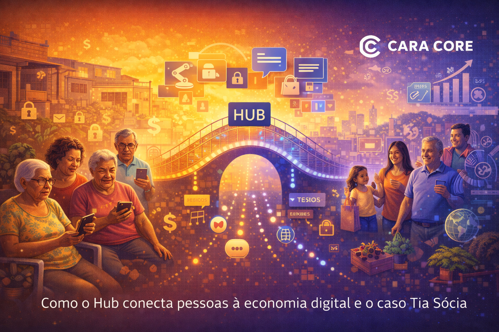

A Última Milha Digital: O Que as 'Tias Sócias' Revelam Sobre o Brasil
Introdução: A Milha Que a Internet Não Chega Sozinha
A economia digital promete inclusão: quem tem celular e internet pode vender, comprar, pagar e receber. Na prática, uma parte enorme do Brasil ainda depende de alguém que faça a ponte — que anote o pedido, que confirme o pagamento, que avise quando o produto chegar. Essa pessoa muitas vezes não está no organograma da startup de tecnologia; está na esquina, no bairro, na casa da "tia" que todo mundo conhece.
Essa figura é o retrato da última milha digital: o trecho entre a plataforma e a pessoa real. Quando falamos em "Tia Sócia", estamos nomeando quem opera nesse trecho — e revelando o que o Brasil ainda é: um país onde a inclusão digital passa por pessoas, não só por apps.
Este artigo trata de quem são essas "tias", da exclusão que elas ajudam a reduzir e de como tecnologia pode amplificar esse papel em vez de ignorá-lo.
1. Quem São as "Tias" na Sociedade Brasileira
No Brasil, "tia" não é só parentesco. É a vizinha de confiança, a dona do pequeno comércio, a líder comunitária que sabe o nome de todo mundo. É quem recebe encomenda pelo outro, quem anota recado, quem explica como usar o PIX ou o aplicativo do banco. Em bairros e cidades médias, essa figura faz parte da estrutura informal que mantém o bairro funcionando.
Economicamente, muitas dessas pessoas estão na ponta da cadeia: revenda, entrega, recarga, pequenos serviços. Não são "usuárias finais" no sentido clássico de quem abre um app e clica sozinha. São intermediárias por necessidade e por vocação — e são elas que levam o digital até quem não tem smartphone, não tem dados ou não tem confiança para usar sozinho.
Reconhecer esse perfil é o primeiro passo para desenhar tecnologia que faça sentido. Software pensado só para o usuário conectado e autônomo deixa de fora justamente quem poderia multiplicar o alcance: a tia que vira ponto de apoio da comunidade.
2. A Exclusão Digital e Econômica
Exclusão digital no Brasil tem várias camadas: falta de acesso à rede, custo dos dados, analfabetismo digital, desconfiança. Quem nunca usou app de banco tem medo de errar; quem não tem plano de dados evita abrir o celular para não gastar. O resultado é que uma parcela grande da população fica à margem da economia digital — não porque não queira, mas porque a barreira é real.
Consequência econômica: quem não está no digital não recebe por PIX na hora, não compara preço online, não vende pelo marketplace. Fica dependente de dinheiro vivo, de intermediários informais e de horários limitados. Para quem já está dentro, parece "só baixar o app"; para quem está fora, o passo é grande.
A última milha digital é exatamente esse passo: o trecho em que alguém — muitas vezes a "tia" — faz a ponte. Ela recebe o pedido pelo WhatsApp, confirma o pagamento, repassa ao sistema. Ela não é obstáculo; é a condição para que o fluxo chegue até o fim.
3. Como o Hub Conecta Pessoas Simples à Economia Digital
O Cara Core Hub foi desenhado para gestão logística, e-commerce e orquestração de pedidos — incluindo cenários em que o pedido não nasce dentro de um app, e sim por mensagem, telefone ou boca a boca. A ideia é que a plataforma não exija que todo mundo seja "usuário digital" no mesmo nível; ela permite que operadores (como as Tias Sócias) entrem no fluxo e façam a interface entre o sistema e a pessoa que está na ponta.
Na prática, isso se traduz em:
- Automação da última milha: pedidos que chegam por canais simples (mensagem, lista) são registrados e acompanhados no Hub, com status e notificações para quem precisa.
- Mensagens e avisos: o sistema pode disparar confirmações, lembretes e alertas para o operador ou para o cliente, reduzindo falha de comunicação e "esqueci de avisar".
- Visão única do fluxo: quem coordena enxerga pedidos, entregas e pendências em um só lugar, mesmo quando a origem do pedido foi uma "tia" anotando no caderno e repassando.
O Hub não substitui a tia; dá a ela ferramenta para que o trabalho dela escale, seja rastreável e se integre ao restante da cadeia. Assim, pessoas simples entram na economia digital pelo braço de alguém em quem confiam.
4. O Caso Tia Sócia Como Estudo de Caso
"Tia Sócia" é o nome que usamos para o perfil da pessoa que atua nessa última milha: a sócia da comunidade, a ponte entre o digital e quem ainda não está dentro. O pitch é simples: em vez de esperar que todo mundo baixe um app e use sozinho, reconhecemos que em muitas realidades brasileiras quem faz o pedido, confirma o pagamento ou avisa a entrega é uma pessoa de referência. O sistema deve servir a ela.
No desenho do Hub, isso significa telas e fluxos que permitem que um operador (a Tia Sócia) cadastre pedidos em nome de clientes, consulte status, receba alertas e repasse informações por WhatsApp ou pessoalmente. O cliente final pode nunca abrir o Hub; ele é atendido pela tia, que por sua vez usa o Hub para não perder pedido, não esquecer entrega e não depender só da memória.
Resultado: mais pedidos cumpridos, menos atrito, e inclusão que acontece por extensão — a comunidade ganha acesso ao mesmo fluxo de e-commerce e logística que a empresa oferece, sem exigir que cada um vire "usuário avançado". O caso Tia Sócia mostra que impacto social e modelo de negócio podem alinhar-se quando a tecnologia é desenhada para quem realmente está na ponta.
5. Por Que Impacto Social É Estratégico
Investir em última milha digital e em perfis como o da Tia Sócia não é só gesto de responsabilidade social. É estratégia de negócio: quem atende esse mercado entende melhor o Brasil real, constrói lealdade em bases que gigantes ignoram e abre espaço para crescimento em cidades médias e em comunidades onde a concorrência não desce.
Além disso, propósito e produto se reforçam. Um software que reconhece a figura da tia como parte do fluxo envia a mensagem de que a empresa leva a sério a realidade local. Isso atrai parceiros, clientes e talentos que querem trabalhar em algo que faça diferença para além do lucro imediato.
A Cara Core escolheu ter o Hub e o conceito Tia Sócia no portfólio exatamente por isso: porque a última milha digital é um problema técnico e humano ao mesmo tempo, e porque resolver esse problema é tanto negócio quanto propósito.
Conclusão: Tecnologia Que Chega Onde a Rede Sozinha Não Chega
As Tias Sócias revelam um Brasil que a métrica de "usuários ativos" esconde: um país onde muita gente ainda entra na economia digital pela mão de alguém. A última milha digital é essa mão — e a tecnologia que a fortalece é a que conecta pessoas simples sem fingir que todo mundo já está no mesmo nível.
Desenhar para a Tia Sócia não é criar solução de segundo nível. É reconhecer quem já faz a ponte e dar a ela ferramenta para ir mais longe. É aí que inclusão e negócio se encontram.
Hashtags
Contato
- E-mail: suporte@caracore.com.br
- Site: www.caracore.com.br
- LinkedIn: Cara Core Informática
Conecte-se conosco no LinkedIn para mais conteúdos sobre última milha digital, Hub e impacto social.
Seguir no LinkedIn
Artigo publicado em 21 de abril de 2026
© 2026 Cara Core Informática. Todos os direitos reservados.